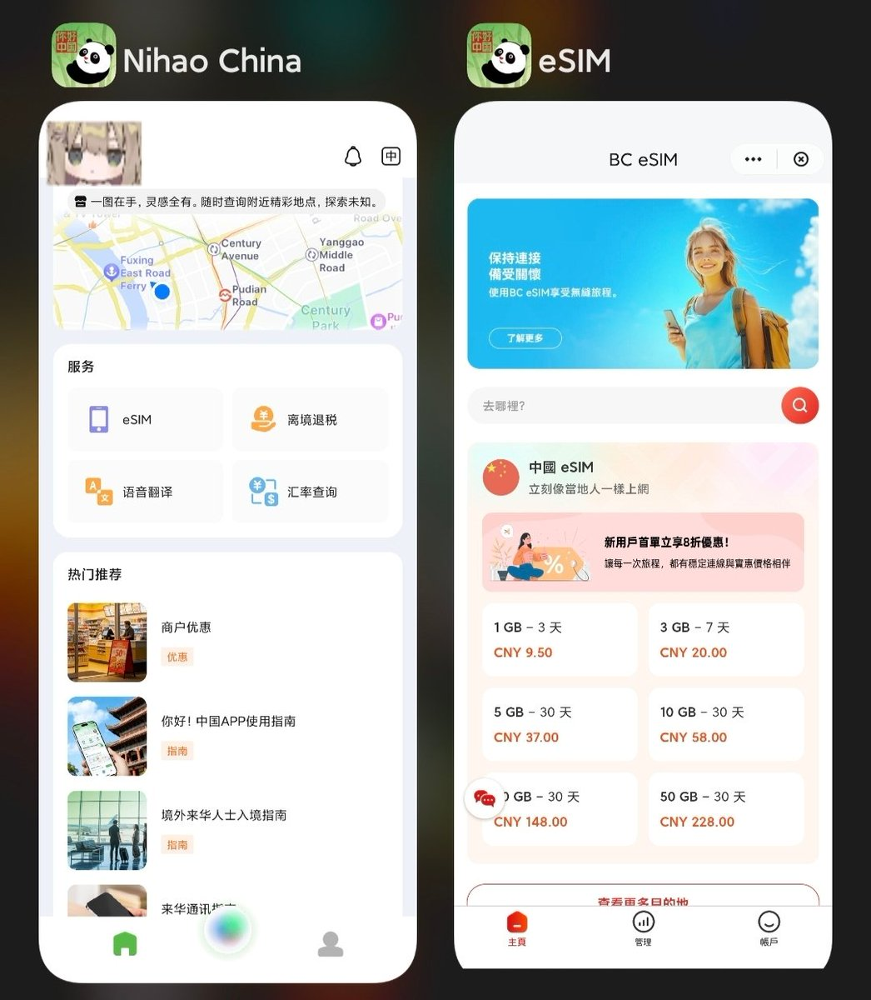
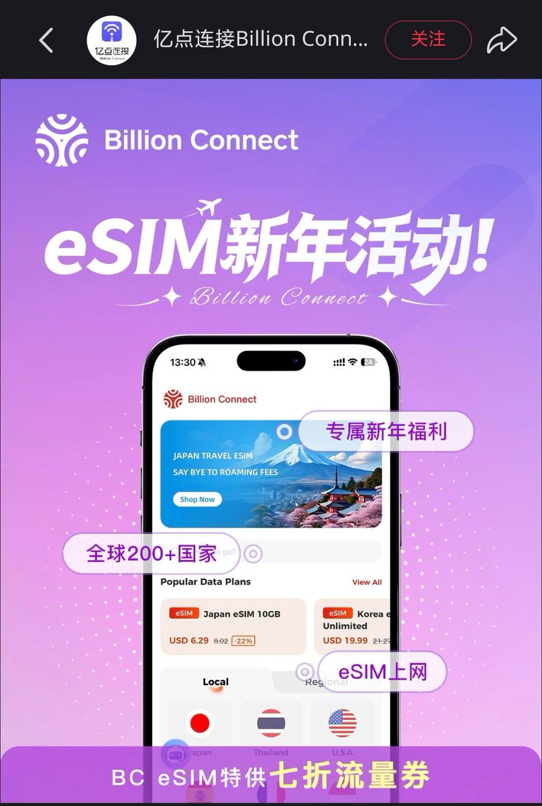
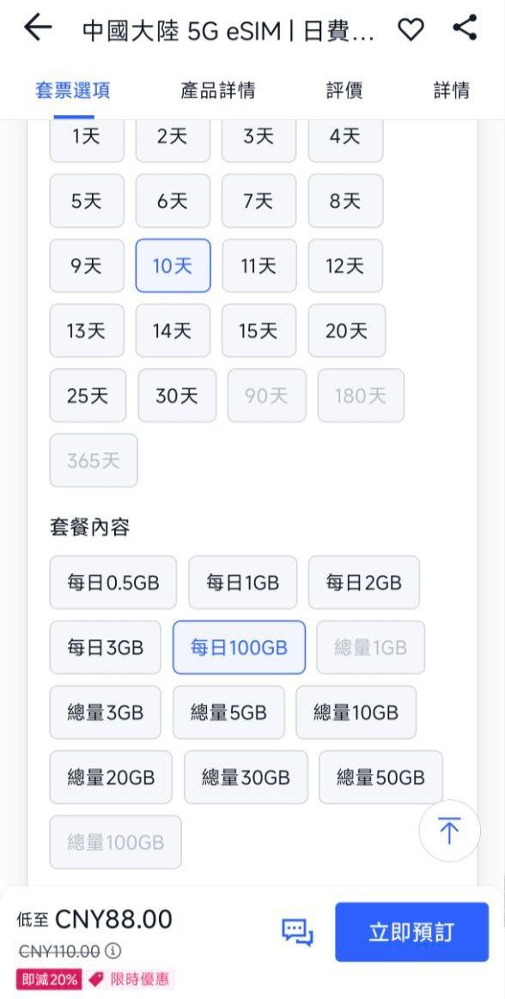

于是我打开了Nihao China，在『服务』中点击“eSIM”，原来BC eSIM消失的“中国”到这里来了🤯
亿点连接除了软银（SoftBank）日本旅游原生卡以外，旗下BC eSIM以前经常在xhs的粉丝群里发5折活动。自从“你好中国”代理BC eSIM后现在客服只会撤回消息、不会搭理用户，新年福利的宣传图也去除了“中国”区域。
此外奶友发现BC eSIM使用的都是阿里云OSS托管静态资源，使用中国大陆IP裸连速度奇慢，疑似亿点人为的限速措施。目前在Trip（携程国际版）等渠道仍可以买到，有按天最高100GB实测限速10Mbps，漫游中国移动。另外漫游中国联通的中国大陆 eSIM为SingTel资源，在Trip上买的时候一定要仔细看清楚！


亿点连接除了软银（SoftBank）日本旅游原生卡以外，旗下BC eSIM以前经常在xhs的粉丝群里发5折活动。自从“你好中国”代理BC eSIM后现在客服只会撤回消息、不会搭理用户，新年福利的宣传图也去除了“中国”区域。
此外奶友发现BC eSIM使用的都是阿里云OSS托管静态资源，使用中国大陆IP裸连速度奇慢，疑似亿点人为的限速措施。目前在Trip（携程国际版）等渠道仍可以买到，有按天最高100GB实测限速10Mbps，漫游中国移动。另外漫游中国联通的中国大陆 eSIM为SingTel资源，在Trip上买的时候一定要仔细看清楚！



出境上网提供商“亿点连接”旗下BC eSIM疑似阻止中国大陆用户购买中国套餐，使用国内网络打开App时会自动隐藏首页和搜寻中的“中国”。
点进『中国大陆 eSIM』，『香港、澳门及中国 eSIM』和『中国、澳门 eSIM』会出现“无网络连接”的报错。 https://t.co/coLYCUIcK8
点进『中国大陆 eSIM』，『香港、澳门及中国 eSIM』和『中国、澳门 eSIM』会出现“无网络连接”的报错。 https://t.co/coLYCUIcK8